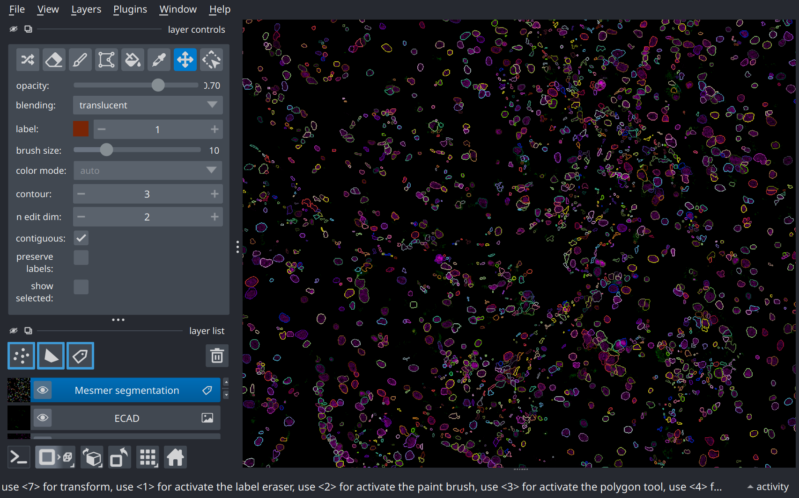

Tutorial#
This tutorial provides a basic walkthrough for computing a cell segmentation mask for multiplexed spatial proteomics images using Mesmer’s official pre-trained model weights. For information on training or evaluating the Mesmer model, see the linked documents.
Example datasets#
This tutorial will make use of the spatial proteomic data available on the
HuBMAP data portal.
Users are encouraged to explore the portal for data of interest.
For convenience, a subset of the publicly-available spatial proteomic data
has been converted to a remote zarr archive.
The datasets in the zarr archive reflect the original HuBMAP indexing scheme
(i.e. HBM###_????_###, where # indicates a number nad ? indicates an
upper-case alphabetical character).
Interacting with the zarr hubmap data mirror requires a few additional dependencies:
pip install zarr\>2 s3fs rich
Note
The hubmap data mirror uses zarr format v3, thus requires zarr>2 to be
installed.
import zarr
if not zarr.__version__.startswith("3"):
raise EnvironmentError(
f"The tutorial requires `zarr>3`, version {zarr.__version__} found."
)
Exploring the archive#
z = zarr.open_group(
store="s3://deepcelltypes-demo-datasets/hubmap.zarr",
mode="r",
storage_options={
"anon": True,
"client_kwargs": dict(region_name="us-east-1"),
},
)
High-level structure of the data archive:
z.tree()
Selecting a dataset#
A more detailed look at the datasets:
import pandas as pd # for nice html rendering
summary = pd.DataFrame.from_dict(
{k:
{
"tissue": z[k].attrs["tissue"],
"technology": z[k].attrs["modality"],
"Num ch.": z[k]["image"].shape[0],
"shape": z[k]["image"].shape[1:],
}
for k in z.group_keys()
},
orient="index",
)
summary.sort_index()
In the interest of minimizing network bandwidth, we’ll use the HBM994_PDJN_987
dataset for this tutorial.
k = "HBM994_PDJN_987"
Cell segmentation pipeline#
The Mesmer pipeline requires 2 inputs:
An image to segment, and
The scale of the image, in microns-per-pixel (mpp)
The image can either be a single channel image of a nuclear marker (e.g. DAPI, HOECHST, etc.) which is required for nuclear segmentation. For whole-cell segmentation, a second channel containing either a membrane and/or cytosol marker is required.
Image setup#
The multiplexed image in this dataset contains 37 channels:
ds = z[k]
print(ds["image"].shape)
chnames = ds["image"].attrs["channels"]
chnames
For whole-cell segmentation, we need a nuclear and (ideally) a pan-membrane marker.
We’ll use H3 as the nuclear marker and ECAD as the membrane marker:
nuc, mem = "H3", "ECAD"
all(marker in chnames for marker in ["H3", "ECAD"])
Now, extract the image data corresponding to these two channels.
The Mesmer pipeline requires multi-channel images to be in channel-first format, i.e. (C, W, H),
so we stack the image such that the channel dimension is first:
import numpy as np
img = np.stack(
[ds["image"][chnames.index(nuc)], ds["image"][chnames.index(mem)]],
axis=0,
).squeeze()
# Double-check that image is channels-first
img.shape
The mpp for the image is included in the metadata:
mpp = ds["image"].attrs["mpp"]
mpp # microns-per-pixel
Pipeline setup#
The Mesmer class implements the full cell segmentation pipeline.
We begin by instantiating a Mesmer segmentation instance:
from torch_mesmer.mesmer import Mesmer
app = Mesmer()
By default, the Mesmer instance attempts to download the latest pre-trained model
weights from huggingface.
This requires the user to have an active HF_TOKEN that is linked to the vanvalenlab org.
See Model and datasets for more info.
Alternatively, weights can be specified manually with the model_path= kwarg - see the
Mesmer API reference for further details.
Cell segmentation#
Once a Mesmer application instance has been instantiated, it can be used for cell
segmentation:
mask = app.predict(img[np.newaxis, ...], image_mpp=mpp, compartment="whole-cell")[0].squeeze()
The result is an whole-cell segmentation mask of the same shape as the input image:
mask.shape
Visualizing results#
Note
Multiplexed images and their analysis products are extremely information dense; users are
strongly recommended to run tutorials locally to leverage napari for interactive
visualization.
import napari
nim = napari.Viewer(show=False) # Headless for CI; set show=True for interactive viz
# Visualize multiplex image
nim.add_image(img, channel_axis=0, name=[nuc, mem]);
# Add segmentation mask
mask_lyr = nim.add_labels(mask, name="Mesmer segmentation")
mask_lyr.contour = 3 # Relatively thick borders for static viz
